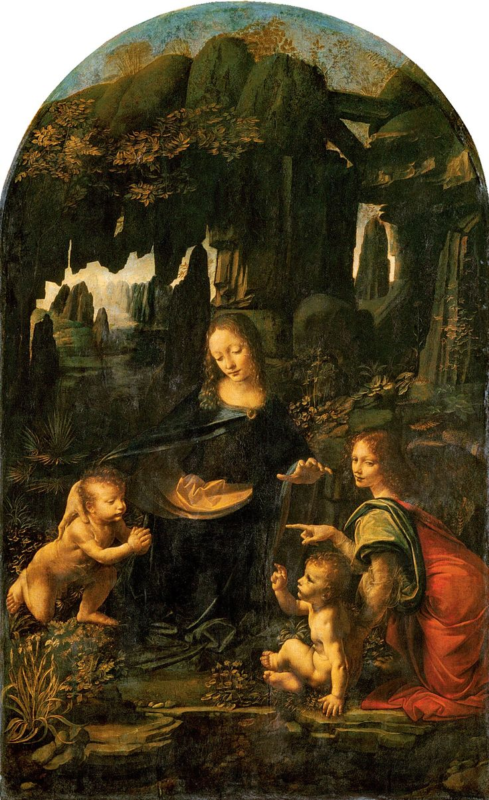

National Gallery
La National Gallery, c’est le spot incontournable pour les fans d’art à Londres. Des œuvres mythiques de Van Gogh, Turner ou Léonard de Vinci, le tout en accès libre. Un voyage visuel au cœur de l’Europe classique, en plein Trafalgar Square.
Cliquez sur les oeuvres pour en avoir une description détaillée.
The Water Lily Pond
Claude Monet

Les Tournesols
Vincent Van Gogh

La Vierge aux Rochers
Leonardo Da Vinci
Tate Gallery
Tate Gallery, c’est le temple de l’art contemporain à Londres. Installée dans une ancienne centrale électrique, elle bouscule les codes avec des expos audacieuses, des installations géantes et une vue imprenable sur la Tamise. Un lieu vibrant, créatif et gratuit.
Cliquez sur les oeuvres pour en avoir une description détaillée.
Marilyn Diptych
Andy Warhol
Whaam!
Roy Lichtenstein
The Weeping Woman
Pablo Picasso